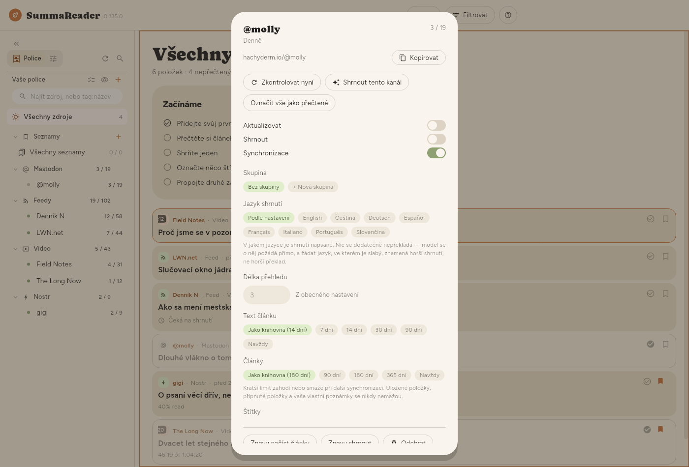
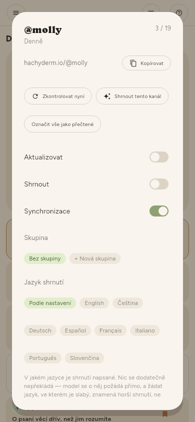

← Uchovávání · Obsah · Synchronizace →
Správa zdrojů
Jeden kanál
Ozubené kolo na řádku police (ukáže ho Vybrat více nebo dlouhé stisknutí), nebo ozubené kolo vedle názvu zdroje v otevřeném článku, otevře panel kanálu:


| Zkontrolovat nyní | Stáhne tento kanál |
| Shrnout tento kanál | Vše z něj, co na shrnutí čeká |
| Označit vše jako přečtené | Vše z něj |
| Aktualizovat | Zda ho kontroly zahrnují |
| Shrnout | Zda ho kontroly shrnují |
| Synchronizace | Zda se jeho články přenášejí do vašich dalších zařízení |
| Skupina, Jazyk shrnutí | Kde je v polici a jeho vlastní jazyk shrnutí |
| Znovu načíst články | Znovu stáhne text, který se nepodařilo získat |
| Znovu shrnout | Zahodí jeho shrnutí a udělá je znovu |
| Odebrat | Nejdřív se zeptá a řekne, co to stojí |
Znovu shrnout použijte po změně jazyka shrnutí nebo modelu — článek, který už shrnutí má, se jinak nikdy znovu neshrne.
Historie, sbalená dole v panelu, ukazuje každou změnu kanálu, nejnovější nahoře: jeho štítky, skupinu a nastavení, a kdy byl přidán nebo odebrán. Každý řádek uvádí datum a čas, co se změnilo a odkud změna přišla — z tohoto zařízení, ze serveru MCP se jménem tokenu, ze synchronizace, z přejmenování štítku, nebo z akce na několika zdrojích najednou. Historie zůstává na tomto zařízení a nesynchronizuje se.
Mnoho kanálů
Nastavení › Základní › Zdroje › Zdroje nabízí stejné ovládací prvky pro celý seznam, s filtrem a zaškrtávacím políčkem, takže „každý kanál YouTube, který jsem minulý týden importoval“ je jedna akce, ne tři sta.